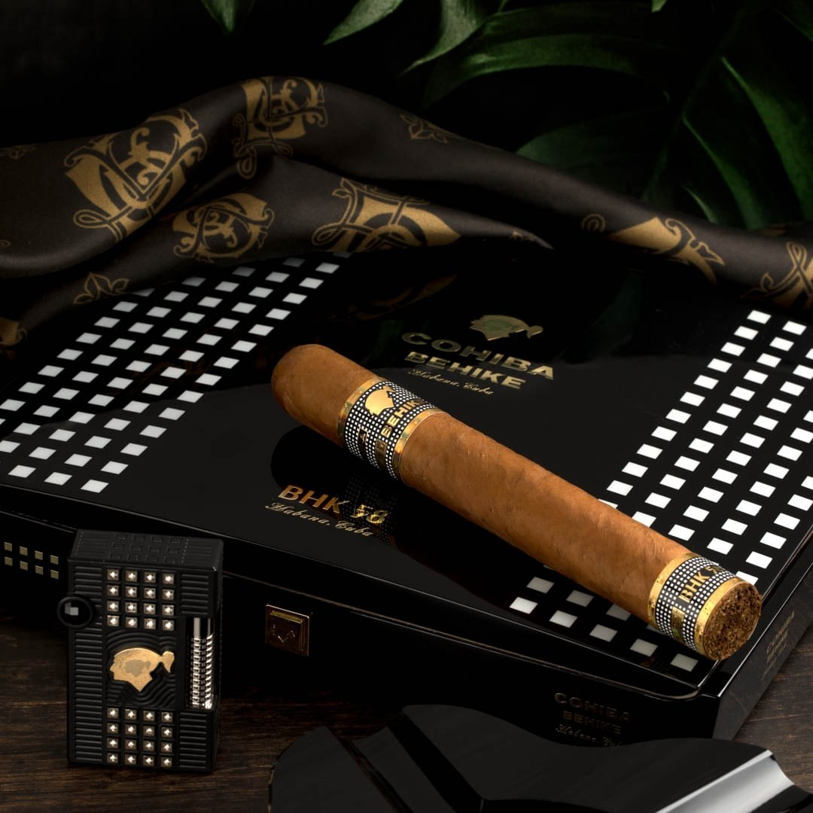

コイーバ・ベヒケ「BHK 58」、ジュネーブで10本箱が登場 — 15年ぶりの第4のビトラ
コイーバの最高峰ライン、ベヒケに15年ぶりの新サイズ「BHK 58」が加わり、ジュネーブの老舗ハウス・オブ・グラウアーが11月26日のニュースで紹介し、10本箱の商品として掲載しました。178mm×58リングのラギートNo.7で、ベヒケでは最長・最太のサイズです。2025年2月の第25回フェスティバル・デル・ハバノで発表されたもので、2010年の登場以来3サイズだったベヒケに加わる第4のビトラとなります。ブレンドの要は希少葉メディオ・ティエンポで、株の最上部に生え、10株に1株未満しか取れない葉とされます。ベヒケ15周年に合わせて、既存のBHK 52／54／56もバンドを刷新し、ビトラ名入りのフットバンドと、真贋対策のNFCチップ内蔵バンドが新たに付きました。これまでBHK 58は、スイスで2026年2月3日から発売された4本入り「15アニベルサリオ・セレクション」（CHF 1,696、約32万4,000円）でのみ入手可能で、単独サイズとしての販売は始まっていませんでした（Cigar Aficionado）。10本箱の価格は同店のページでは未公表で、単独販売の開始時期も公式発表はまだありません。参考までに、既存サイズの1本あたりの価格はBHK 52が263ドル（約41,800円）、54が328ドル（約52,200円）、56が365ドル（約58,000円）です（いずれもCigar Aficionadoの報道による）。
記事全文を読む ›